PRINCIPLES OF PERSONAL MANAGEMENT
Things which matter most
must never be at the mercy of things which matter least.
GOETHE
Will you take just a moment and write down a short answer to the following two questions? Your answers will be important to you as you begin work on Habit 3.
***
Question 1: What one thing could you do (something you aren’t doing now) that, if you did it on a regular basis, would make a tremendous positive difference in your personal life?
Question 2: What one thing in your business or professional life would bring similar results?
We’ll come back to these answers later. But first, let’s put Habit 3 in perspective.
***
Habit 3 is the personal fruit, the practical fulfillment of Habits 1 and 2.
Habit 1 says, “You’re the creator. You are in charge.” It’s based on the four unique human endowments of imagination, conscience, independent will, and, particularly, self-awareness. It empowers you to say, “That’s an unhealthy program I’ve been given from my childhood, from my social mirror. I don’t like that ineffective script. I can change.”
Habit 2 is the first or mental creation. It’s based on imagination—the ability to envision, to see the potential, to create with our minds what we cannot at present see with our eyes; and conscience—the ability to detect our own uniqueness and the personal, moral, and ethical guidelines within which we can most happily fulfill it. It’s the deep contact with our basic paradigms and values and the vision of what we can become.
Habit 3, then, is the second creation, the physical creation. It’s the fulfillment, the actualization, the natural emergence of Habits 1 and 2. It’s the exercise of independent will toward becoming principle-centered. It’s the day-in, day-out, moment-by-moment doing it.
Habits 1 and 2 are absolutely essential and prerequisite to Habit 3. You can’t become principle-centered without first being aware of and developing your own proactive nature. You can’t become principle-centered without first being aware of your paradigms and understanding how to shift them and align them with principles. You can’t become principle-centered without a vision of and a focus on the unique contribution that is yours to make.
But with that foundation, you can become principle-centered, day-in and day-out, moment-by-moment, by living Habit 3—by practicing effective self-management.
Management, remember, is clearly different from leadership. Leadership is primarily a high-powered, right brain activity. It’s more of an art; it’s based on a philosophy. You have to ask the ultimate questions of life when you’re dealing with personal leadership issues.
But once you have dealt with those issues, once you have resolved them, you then have to manage yourself effectively to create a life congruent with your answers. The ability to manage well doesn’t make much difference if you’re not even in the “right jungle.” But if you are in the right jungle, it makes all the difference. In fact, the ability to manage well determines the quality and even the existence of the second creation. Management is the breaking down, the analysis, the sequencing, the specific application, the time-bound left-brain aspect of effective self-government. My own maxim of personal effectiveness is this: Manage from the left; lead from the right.
THE POWER OF INDEPENDENT WILL
In addition to self-awareness, imagination, and conscience, it is the fourth human endowment—independent will—that really makes effective self-management possible. It is the ability to make decisions and choices and to act in accordance with them. It is the ability to act rather than to be acted upon, to proactively carry out the program we have developed through the other three endowments.
The human will is an amazing thing. Time after time, it has triumphed against unbelievable odds. The Helen Kellers of this world give dramatic evidence of the value, the power of the independent will.
But as we examine this endowment in the context of effective self-management, we realize it’s usually not the dramatic, the visible, the once-in-a-lifetime, up-by-the-bootstraps effort that brings enduring success. Empowerment comes from learning how to use this great endowment in the decisions we make every day.
The degree to which we have developed our independent will in our everyday lives is measured by our personal integrity. Integrity is, fundamentally, the value we place on ourselves. It’s our ability to make and keep commitments to ourselves, to “walk our talk.” It’s honor with self, a fundamental part of the Character Ethic, the essence of proactive growth.
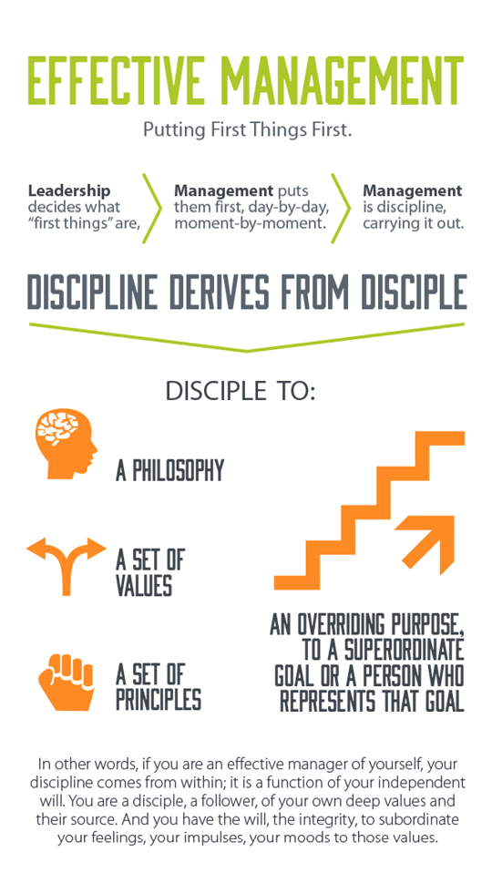
Effective management is putting first things first. While leadership decides what “first things” are, it is management that puts them first, day-by-day, moment-by-moment. Management is discipline, carrying it out.
Discipline derives from disciple—disciple to a philosophy, disciple to a set of principles, disciple to a set of values, disciple to an overriding purpose, to a superordinate goal or a person who represents that goal.
In other words, if you are an effective manager of yourself, your discipline comes from within; it is a function of your independent will. You are a disciple, a follower, of your own deep values and their source. And you have the will, the integrity, to subordinate your feelings, your impulses, your moods to those values.
One of my favorite essays is “The Common Denominator of Success,” written by E. M. Gray. He spent his life searching for the one denominator that all successful people share. He found it wasn’t hard work, good luck, or astute human relations, though those were all important. The one factor that seemed to transcend all the rest embodies the essence of Habit 3—putting first things first.
“The successful person has the habit of doing the things failures don’t like to do,” he observed. “They don’t like doing them either necessarily. But their disliking is subordinated to the strength of their purpose.”
That subordination requires a purpose, a mission, a Habit 2 clear sense of direction and value, a burning “yes!” inside that makes it possible to say “no” to other things. It also requires independent will, the power to do something when you don’t want to do it, to be a function of your values rather than a function of the impulse or desire of any given moment. It’s the power to act with integrity to your proactive first creation.
FOUR GENERATIONS OF TIME MANAGEMENT
In Habit 3 we are dealing with many of the questions addressed in the field of life and time management. As a longtime student of this fascinating field, I am personally persuaded that the essence of the best thinking in the area of time management can be captured in a single phrase: Organize and execute around priorities. That phrase represents the evolution of three generations of time management theory, and how to best do it is the focus of a wide variety of approaches and materials.
Personal management has evolved in a pattern similar to many other areas of human endeavor. Major developmental thrusts, or “waves” as Alvin Toffler calls them, follow each other in succession, each adding a vital new dimension. For example, in social development, the agricultural revolution was followed by the industrial revolution, which was followed by the informational revolution. Each succeeding wave created a surge of social and personal progress.
Likewise, in the area of time management, each generation builds on the one before it—each one moves us toward greater control of our lives. The first wave or generation could be characterized by notes and checklists, an effort to give some semblance of recognition and inclusiveness to the many demands placed on our time and energy.
The second generation could be characterized by calendars and appointment books. This wave reflects an attempt to look ahead, to schedule events and activities in the future.
The third generation reflects the current time management field. It adds to those preceding generations the important idea of prioritization, of clarifying values, and of comparing the relative worth of activities based on their relationship to those values. In addition, it focuses on setting goals—specific long-, intermediate-, and short-term targets toward which time and energy would be directed in harmony with values. It also includes the concept of daily planning, of making a specific plan to accomplish those goals and activities determined to be of greatest worth.
While the third generation has made a significant contribution, people have begun to realize that “efficient” scheduling and control of time are often counterproductive. The efficiency focus creates expectations that clash with the opportunities to develop rich relationships, to meet human needs, and to enjoy spontaneous moments on a daily basis.
As a result, many people have become turned off by time management programs and planners that make them feel too scheduled, too restricted, and they “throw the baby out with the bath water,” reverting to first or second generation techniques to preserve relationships, spontaneity, and quality of life.
But there is an emerging fourth generation that is different in kind. It recognizes that “time management” is really a misnomer—the challenge is not to manage time, but to manage ourselves. Satisfaction is a function of expectation as well as realization. And expectation (and satisfaction) lie in our Circle of Influence.
Rather than focusing on things and time, fourth generation expectations focus on preserving and enhancing relationships and on accomplishing results—in short, on maintaining the P/PC Balance.
QUADRANT II
The essential focus of the fourth generation of management can be captured in the time management matrix diagrammed on the next page. Basically, we spend time in one of four ways.
As you can see, the two factors that define an activity are urgent and important. Urgent means it requires immediate attention. It’s “Now!” Urgent things act on us. A ringing phone is urgent. Most people can’t stand the thought of just allowing the phone to ring.
You could spend hours preparing materials, you could get all dressed up and travel to a person’s office to discuss a particular issue, but if the phone were to ring while you were there, it would generally take precedence over your personal visit.
If you were to phone someone, there aren’t many people who would say, “I’ll get to you in 15 minutes; just hold.” But most people would probably let you wait in an office for at least that long while they completed a telephone conversation with someone else.
Urgent matters are usually visible. They press on us; they insist on action. They’re often popular with others. They’re usually right in front of us. And often they are pleasant, easy, fun to do. But so often they are unimportant!
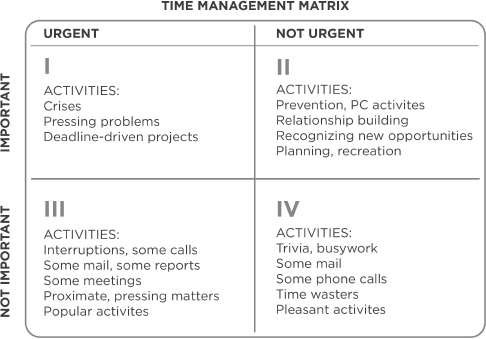
Importance, on the other hand, has to do with results. If something is important, it contributes to your mission, your values, your high priority goals.
We react to urgent matters. Important matters that are not urgent require more initiative, more proactivity. We must act to seize opportunity, to make things happen. If we don’t practice Habit 2, if we don’t have a clear idea of what is important, of the results we desire in our lives, we are easily diverted into responding to the urgent.
Look for a moment at the four quadrants in the time management matrix. Quadrant I is both urgent and important. It deals with significant results that require immediate attention. We usually call the activities in Quadrant I “crises” or “problems.” We all have some Quadrant I activities in our lives. But Quadrant I consumes many people. They are crisis managers, problem-minded people, deadline-driven producers.
As long as you focus on Quadrant I, it keeps getting bigger and bigger until it dominates you. It’s like the pounding surf. A huge problem comes and knocks you down and you’re wiped out. You struggle back up only to face another one that knocks you down and slams you to the ground.
Some people are literally beaten up by problems all day every day. The only relief they have is in escaping to the not important, not urgent activities of Quadrant IV. So when you look at their total matrix, 90 percent of their time is in Quadrant I and most of the remaining 10 percent is in Quadrant IV, with only negligible attention paid to Quadrants II and III. That’s how people who manage their lives by crisis live.
There are other people who spend a great deal of time in “urgent, but not important” Quadrant III, thinking they’re in Quadrant I. They spend most of their time reacting to things that are urgent, assuming they are also important. But the reality is that the urgency of these matters is often based on the priorities and expectations of others.
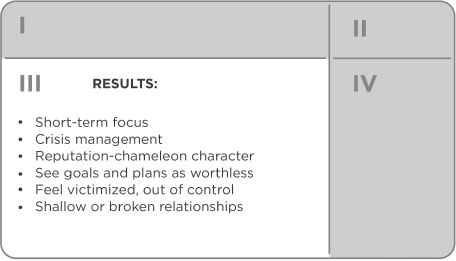
People who spend time almost exclusively in Quadrants III and IV basically lead irresponsible lives.
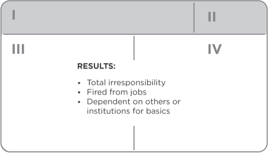
Effective people stay out of Quadrants III and IV because, urgent or not, they aren’t important. They also shrink Quadrant I down to size by spending more time in Quadrant II.
Quadrant II is the heart of effective personal management. It deals with things that are not urgent, but are important. It deals with things like building relationships, writing a personal mission statement, long-range planning, exercising, preventive maintenance, preparation—all those things we know we need to do, but somehow seldom get around to doing, because they aren’t urgent.
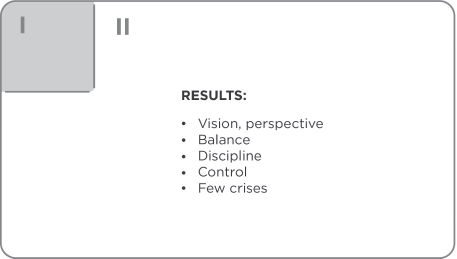
To paraphrase Peter Drucker, effective people are not problem-minded; they’re opportunity-minded. They feed opportunities and starve problems. They think preventively. They have genuine Quadrant I crises and emergencies that require their immediate attention, but the number is comparatively small. They keep P and PC in balance by focusing on the important, but not urgent, high leverage capacity-building activities of Quadrant II.
With the time management matrix in mind, take a moment now and consider how you answered the questions at the beginning of this chapter. What quadrant do they fit in? Are they important? Are they urgent?
My guess is that they probably fit into Quadrant II. They are obviously important, deeply important, but not urgent. And because they aren’t urgent, you don’t do them.
Now look again at the nature of those questions: What one thing could you do in your personal and professional life that, if you did it on a regular basis, would make a tremendous positive difference in your life? Quadrant II activities have that kind of impact. Our effectiveness takes quantum leaps when we do them.
***
I asked a similar question of a group of shopping center managers. “If you were to do one thing in your professional work that you know would have enormously positive effects on the results, what would it be?” Their unanimous response was to build helpful personal relationships with the tenants, the owners of the stores inside the shopping center, which is a Quadrant II activity.
We did an analysis of the time they were spending on that activity. It was less than 5 percent. They had good reasons—problems, one right after another. They had reports to make out, meetings to go to, correspondence to answer, phone calls to make, constant interruptions. Quadrant I had consumed them.
They were spending very little time with the store managers, and the time they did spend was filled with negative energy. The only reason they visited the store managers at all was to enforce the contract—to collect the money or discuss advertising or other practices that were out of harmony with center guidelines, or some similar thing.
The store owners were struggling for survival, let alone prosperity. They had employment problems, cost problems, inventory problems, and a host of other problems. Most of them had no training in management at all. Some were fairly good merchandisers, but they needed help. The tenants didn’t even want to see the shopping center owners; they were just one more problem to contend with.
So the owners decided to be proactive. They determined their purpose, their values, their priorities. In harmony with those priorities, they decided to spend about one-third of their time in helping relationships with the tenants.
In working with that organization for about a year and a half, I saw them climb to around 20 percent, which represented more than a fourfold increase. In addition, they changed their role. They became listeners, trainers, consultants to the tenants. Their interchanges were filled with positive energy.
The effect was dramatic, profound. By focusing on relationships and results rather than time and methods, the numbers went up, the tenants were thrilled with the results created by new ideas and skills, and the shopping center managers were more effective and satisfied and increased their list of potential tenants and lease revenue based on increased sales by the tenant stores. They were no longer policemen or hovering supervisors. They were problem solvers, helpers.
***
Whether you are a student at the university, a worker in an assembly line, a homemaker, fashion designer, or president of a company, I believe that if you were to ask what lies in Quadrant II and cultivate the proactivity to go after it, you would find the same results. Your effectiveness would increase dramatically. Your crises and problems would shrink to manageable proportions because you would be thinking ahead, working on the roots, doing the preventive things that keep situations from developing into crises in the first place. In time management jargon, this is called the Pareto Principle—80 percent of the results flow out of 20 percent of the activities.
WHAT IT TAKES TO SAY “No”
The only place to get time for Quadrant II in the beginning is from Quadrants III and IV. You can’t ignore the urgent and important activities of Quadrant I, although it will shrink in size as you spend more time with prevention and preparation in Quadrant II. But the initial time for Quadrant II has to come out of III and IV.
You have to be proactive to work on Quadrant II because Quadrants I and III work on you. To say “yes” to important Quadrant II priorities, you have to learn to say “no” to other activities, sometimes apparently urgent things.
***
Some time ago, my wife was invited to serve as chairman of a committee in a community endeavor. She had a number of truly important things she was trying to work on, and she really didn’t want to do it. But she felt pressured into it and finally agreed.
Then she called one of her dear friends to ask if she would serve on her committee. Her friend listened for a long time and then said, “Sandra, that sounds like a wonderful project, a really worthy undertaking. I appreciate so much your inviting me to be a part of it. I feel honored by it. For a number of reasons, I won’t be participating myself, but I want you to know how much I appreciate your invitation.”
Sandra was ready for anything but a pleasant “no.” She turned to me and sighed, “I wish I’d said that.”
***
I don’t mean to imply that you shouldn’t be involved in significant service projects. Those things are important. But you have to decide what your highest priorities are and have the courage—pleasantly, smilingly, nonapologetically—to say “no” to other things. And the way you do that is by having a bigger “yes” burning inside. The enemy of the “best” is often the “good.”
Keep in mind that you are always saying “no” to something. If it isn’t to the apparent, urgent things in your life, it is probably to the more fundamental, highly important things. Even when the urgent is good, the good can keep you from your best, keep you from your unique contribution, if you let it.
***
When I was Director of University Relations at a large university, I hired a very talented, proactive, creative writer. One day, after he had been on the job for a few months, I went into his office and asked him to work on some urgent matters that were pressing on me.
He said, “Stephen, I’ll do whatever you want me to do. Just let me share with you my situation.”
Then he took me over to his wallboard, where he had listed over two dozen projects he was working on, together with performance criteria and deadline dates that had been clearly negotiated before. He was highly disciplined, which is why I went to see him in the first place. “If you want to get something done, give it to a busy man.”
Then he said, “Stephen, to do the jobs that you want done right would take several days. Which of these projects would you like me to delay or cancel to satisfy your request?”
Well, I didn’t want to take the responsibility for that. I didn’t want to put a cog in the wheel of one of the most productive people on the staff just because I happened to be managing by crisis at the time. The jobs I wanted done were urgent, but not important. So I went and found another crisis manager and gave the job to him.
***
We say “yes” or “no” to things daily, usually many times a day. A center of correct principles and a focus on our personal mission empowers us with wisdom to make those judgments effectively.
As I work with different groups, I tell them that the essence of effective time and life management is to organize and execute around balanced priorities. Then I ask this question: if you were to fault yourself in one of three areas, which would it be: (1) the inability to prioritize; (2) the inability or desire to organize around those priorities; or (3) the lack of discipline to execute around them, to stay with your priorities and organization?
Most people say their main fault is a lack of discipline. On deeper thought, I believe that is not the case. The basic problem is that their priorities have not become deeply planted in their hearts and minds. They haven’t really internalized Habit 2.
There are many people who recognize the value of Quadrant II activities in their lives, whether they identify them as such or not. And they attempt to give priority to those activities and integrate them into their lives through self-discipline alone. But without a principle center and a personal mission statement, they don’t have the necessary foundation to sustain their efforts. They’re working on the leaves, on the attitudes and the behaviors of discipline, without even thinking to examine the roots, the basic paradigms from which their natural attitudes and behaviors flow.
A Quadrant II focus is a paradigm that grows out of a principle center. If you are centered on your spouse, your money, your friends, your pleasure, or any extrinsic factor, you will keep getting thrown back into Quadrants I and III, reacting to the outside forces your life is centered on. Even if you’re centered on yourself, you’ll end up in I and III reacting to the impulse of the moment. Your independent will alone cannot effectively discipline you against your center.
In the words of the architectural maxim, form follows function. Likewise, management follows leadership. The way you spend your time is a result of the way you see your time and the way you really see your priorities. If your priorities grow out of a principle center and a personal mission, if they are deeply planted in your heart and in your mind, you will see Quadrant II as a natural, exciting place to invest your time.
It’s almost impossible to say “no” to the popularity of Quadrant III or to the pleasure of escape to Quadrant IV if you don’t have a bigger “yes” burning inside. Only when you have the self-awareness to examine your program—and the imagination and conscience to create a new, unique, principle-centered program to which you can say “yes”—only then will you have sufficient independent will power to say “no,” with a genuine smile, to the unimportant.
MOVING INTO QUADRANT II
If Quadrant II activities are clearly the heart of effective personal management—the “first things” we need to put first—then how do we organize and execute around those things?
The first generation of time management does not even recognize the concept of priority. It gives us notes and “to do” lists that we can cross off, and we feel a temporary sense of accomplishment every time we check something off, but no priority is attached to items on the list. In addition, there is no correlation between what’s on the list and our ultimate values and purposes in life. We simply respond to whatever penetrates our awareness and apparently needs to be done.
Many people manage from this first-generation paradigm. It’s the course of least resistance. There’s no pain or strain; it’s fun to “go with the flow.” Externally imposed disciplines and schedules give people the feeling that they aren’t responsible for results.
But first-generation managers, by definition, are not effective people. They produce very little, and their life-style does nothing to build their production capability. Buffeted by outside forces, they are often seen as undependable and irresponsible, and they have very little sense of control and self-esteem.
Second-generation managers assume a little more control. They plan and schedule in advance and generally are seen as more responsible because they “show up” when they’re supposed to.
But again, the activities they schedule have no priority or recognized correlation to deeper values and goals. They have few significant achievements and tend to be schedule oriented.
Third-generation managers take a significant step forward. They clarify their values and set goals. They plan each day and prioritize their activities.
As I have said, this is where most of the time management field is today. But this third generation has some critical limitations. First, it limits vision—daily planning often misses important things that can only be seen from a larger perspective. The very language of “daily planning” focuses on the urgent—the “now.” While third generation prioritization provides order to activity, it doesn’t question the essential importance of the activity in the first place—it doesn’t place the activity in the context of principles, personal mission, roles, and goals. The third-generation value-driven daily planning approach basically prioritizes the Quadrant I and III problems and crises of the day.
In addition, the third generation makes no provision for managing roles in a balanced way. It lacks realism, creating the tendency to over-schedule the day, resulting in frustration and the desire to occasionally throw away the plan and escape to Quadrant IV. And its efficiency, time management focus tends to strain relationships rather than build them.
While each of the three generations has recognized the value of some kind of management tool, none has produced a tool that empowers a person to live a principle-centered, Quadrant II life-style. The first-generation notepads and “to do” lists give us no more than a place to capture those things that penetrate our awareness so we won’t forget them. The second-generation appointment books and calendars merely provide a place to record our future commitments so that we can be where we have agreed to be at the appropriate time.
Even the third generation, with its vast array of planners and materials, focuses primarily on helping people prioritize and plan their Quadrants I and III activities. Though many trainers and consultants recognize the value of Quadrant II activities, the actual planning tools of the third generation do not facilitate organizing and executing around them.
As each generation builds on those that have preceded it, the strengths and some of the tools of each of the first three generations provide elemental material for the fourth. But there is an added need for a new dimension, for the paradigm and the implementation that will empower us to move into Quadrant II, to become principle-centered and to manage ourselves to do what is truly most important.
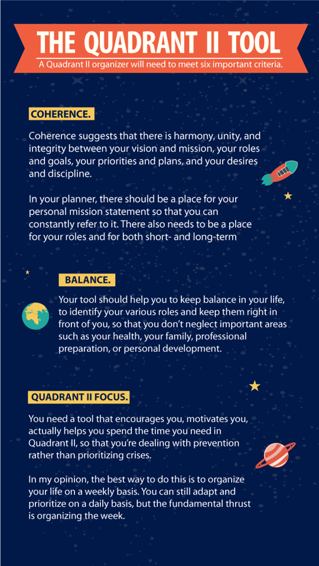
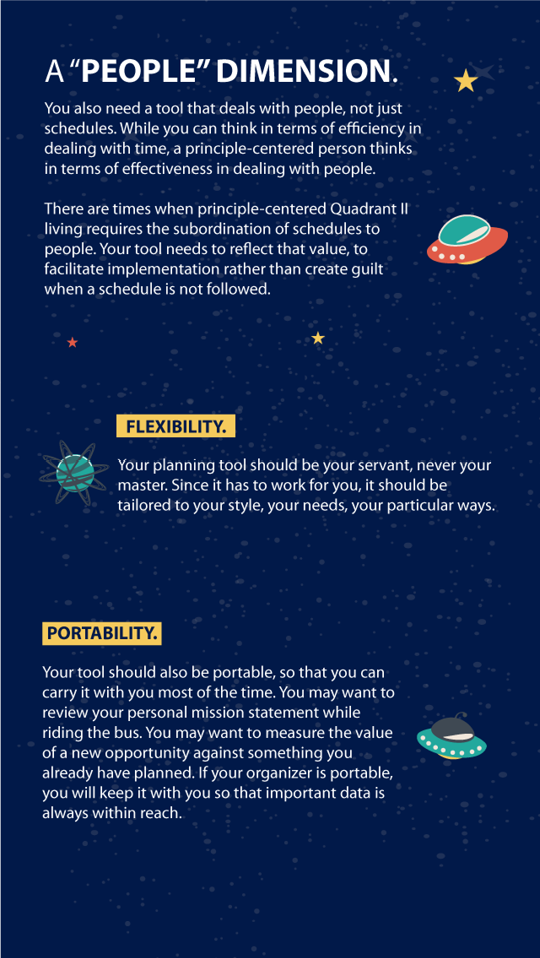
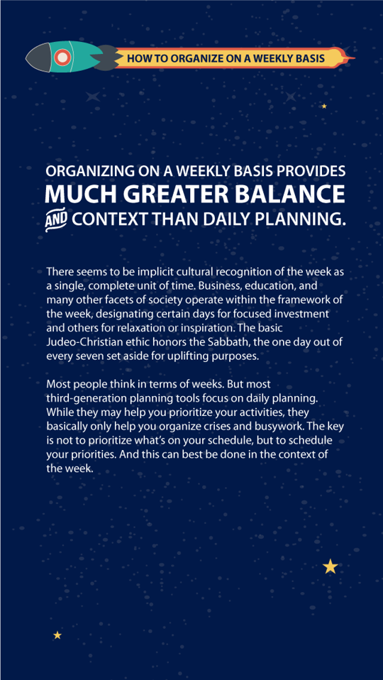
THE QUADRANT II TOOL
The objective of Quadrant II management is to manage our lives effectively—from a center of sound principles, from a knowledge of our personal mission, with a focus on the important as well as the urgent, and within the framework of maintaining a balance between increasing our production and increasing our production capability.
This is, admittedly, an ambitious objective for people caught in the thick of thin things in Quadrants III and IV. But striving to achieve it will have a phenomenal impact on personal effectiveness.
A Quadrant II organizer will need to meet six important criteria.
COHERENCE. Coherence suggests that there is harmony, unity, and integrity between your vision and mission, your roles and goals, your priorities and plans, and your desires and discipline. In your planner, there should be a place for your personal mission statement so that you can constantly refer to it. There also needs to be a place for your roles and for both short- and long-term goals.
BALANCE. Your tool should help you to keep balance in your life, to identify your various roles and keep them right in front of you, so that you don’t neglect important areas such as your health, your family, professional preparation, or personal development.
Many people seem to think that success in one area can compensate for failure in other areas of life. But can it really? Perhaps it can for a limited time in some areas. But can success in your profession compensate for a broken marriage, ruined health, or weakness in personal character? True effectiveness requires balance, and your tool needs to help you create and maintain it.
QUADRANT II FOCUS. You need a tool that encourages you, motivates you, actually helps you spend the time you need in Quadrant II, so that you’re dealing with prevention rather than prioritizing crises. In my opinion, the best way to do this is to organize your life on a weekly basis. You can still adapt and prioritize on a daily basis, but the fundamental thrust is organizing the week.
Organizing on a weekly basis provides much greater balance and context than daily planning. There seems to be implicit cultural recognition of the week as a single, complete unit of time. Business, education, and many other facets of society operate within the framework of the week, designating certain days for focused investment and others for relaxation or inspiration. The basic Judeo-Christian ethic honors the Sabbath, the one day out of every seven set aside for uplifting purposes.
Most people think in terms of weeks. But most third-generation planning tools focus on daily planning. While they may help you prioritize your activities, they basically only help you organize crises and busywork. The key is not to prioritize what’s on your schedule, but to schedule your priorities. And this can best be done in the context of the week.
A “PEOPLE” DIMENSION. You also need a tool that deals with people, not just schedules. While you can think in terms of efficiency in dealing with time, a principle-centered person thinks in terms of effectiveness in dealing with people. There are times when principle-centered Quadrant II living requires the subordination of schedules to people. Your tool needs to reflect that value, to facilitate implementation rather than create guilt when a schedule is not followed.
FLEXIBILITY. Your planning tool should be your servant, never your master. Since it has to work for you, it should be tailored to your style, your needs, your particular ways.
PORTABILITY. Your tool should also be portable, so that you can carry it with you most of the time. You may want to review your personal mission statement while riding the bus. You may want to measure the value of a new opportunity against something you already have planned. If your organizer is portable, you will keep it with you so that important data is always within reach.
Since Quadrant II is the heart of effective self-management, you need a tool that moves you into Quadrant II. My work with the fourth-generation concept has led to the creation of a tool specifically designed according to the criteria listed above. But many good third-generation tools can easily be adapted. Because the principles are sound, the practices or specific applications can vary from one individual to the next.
BECOMING A QUADRANT II SELF-MANAGER
Although my effort here is to teach principles, not practices, of effectiveness, I believe you can better understand the principles and the empowering nature of the fourth generation if you actually experience organizing a week from a principle-centered, Quadrant II base.
Quadrant II organizing involves four key activities.
IDENTIFYING ROLES. The first task is to write down your key roles. If you haven’t really given serious thought to the roles in your life, you can write down what immediately comes to mind. You have a role as an individual. You may want to list one or more roles as a family member—a husband or wife, mother or father, son or daughter, a member of the extended family of grandparents, aunts, uncles, and cousins. You may want to list a few roles in your work, indicating different areas in which you wish to invest time and energy on a regular basis. You may have roles in church or community affairs.
You don’t need to worry about defining the roles in a way that you will live with for the rest of your life—just consider the week and write down the areas you see yourself spending time in during the next seven days.
Here are two examples of the way people might see their various roles.
| 1. Individual | 1. Personal Development |
| 2. Spouse/Parent | 2. Spouse |
| 3. Manager New Products | 3. Parent |
| 4. Manager Research | 4. Real Estate Salesperson |
| 5. Manager Staff Dev. | 5. Community Service |
| 6. Manager Administration | 6. Symphony Board Member |
| 7. Chairman United Way |
SELECTING GOALS. The next step is to think of one or two important results you feel you should accomplish in each role during the next seven days. These would be recorded as goals. (See next page.)

At least some of these goals should reflect Quadrant II activities. Ideally, these weekly goals would be tied to the longer-term goals you have identified in conjunction with your personal mission statement. But even if you haven’t written your mission statement, you can get a feeling, a sense, of what is important as you consider each of your roles and one or two goals for each role.
SCHEDULING. Now you can look at the week ahead with your goals in mind and schedule time to achieve them. For example, if your goal is to produce the first draft of your personal mission statement, you may want to set aside a two-hour block of time on Sunday to work on it. Sunday (or some other day of the week that is special to you, your faith, or your circumstances) is often the ideal time to plan your more personally uplifting activities, including weekly organizing. It’s a good time to draw back, to seek inspiration, to look at your life in the context of principles and values.
If you set a goal to become physically fit through exercise, you may want to set aside an hour three or four days during the week, or possibly every day during the week, to accomplish that goal. There are some goals that you may only be able to accomplish during business hours, or some that you can only do on Saturday when your children are home. Can you begin to see some of the advantages of organizing the week instead of the day?
Having identified roles and set goals, you can translate each goal to a specific day of the week, either as a priority item or, even better, as a specific appointment. You can also check your annual or monthly calendar for any appointments you may have previously made and evaluate their importance in the context of your goals, transferring those you decide to keep to your schedule and making plans to reschedule or cancel others.
As you study the following weekly schedule, observe how each of the nineteen most important, often Quadrant II, goals has been scheduled or translated into a specific action plan. In addition, notice the box labeled “Sharpen the Saw” that provides a place to plan vital renewing Quadrant II activities in each of the four human dimensions that will be explained in Habit 7.
Even with time set aside to accomplish 19 important goals during the week, look at the amount of remaining unscheduled space on the schedule! As well as empowering you to put first things first, Quadrant II weekly organizing gives you the freedom and the flexibility to handle unanticipated events, to shift appointments if you need to, to savor relationships and interactions with others, to deeply enjoy spontaneous experiences, knowing that you have proactively organized your week to accomplish key goals in every area of your life.
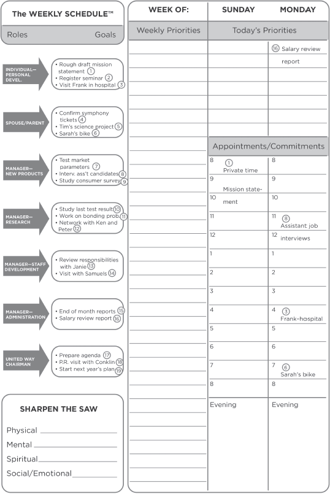
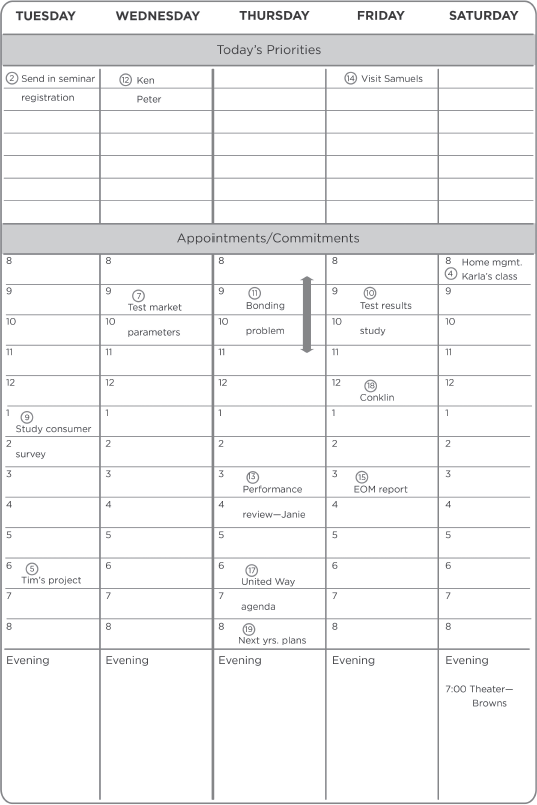
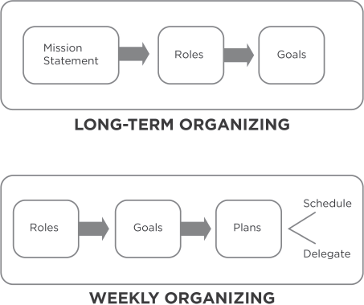
DAILY ADAPTING. With Quadrant II weekly organizing, daily planning becomes more a function of daily adapting, of prioritizing activities and responding to unanticipated events, relationships, and experiences in a meaningful way.
Taking a few minutes each morning to review your schedule can put you in touch with the value-based decisions you made as you organized the week as well as unanticipated factors that may have come up. As you overview the day, you can see that your roles and goals provide a natural prioritization that grows out of your innate sense of balance. It is a softer, more right-brain prioritization that ultimately comes out of your sense of personal mission.
You may still find that the third-generation A, B, C or 1, 2, 3 prioritization gives needed order to daily activities. It would be a false dichotomy to say that activities are either important or they aren’t. They are obviously on a continuum, and some important activities are more important than others. In the context of weekly organizing, third-generation prioritization gives order to daily focus.
But trying to prioritize activities before you even know how they relate to your sense of personal mission and how they fit into the balance of your life is not effective. You may be prioritizing and accomplishing things you don’t want or need to be doing at all.
Can you begin to see the difference between organizing your week as a principle-centered, Quadrant II manager and planning your days as an individual centered on something else? Can you begin to sense the tremendous difference the Quadrant II focus would make in your current level of effectiveness?
Having experienced the power of principle-centered Quadrant II organizing in my own life and having seen it transform the lives of hundreds of other people, I am persuaded it makes a difference—a quantum positive difference. And the more completely weekly goals are tied into a wider framework of correct principles and into a personal mission statement, the greater the increase in effectiveness will be.
LIVING IT
Returning once more to the computer metaphor, if Habit 1 says “You’re the programmer” and Habit 2 says “Write the program,” then Habit 3 says “Run the program,” “Live the program.” And living it is primarily a function of our independent will, our self-discipline, our integrity, and commitment—not to short-term goals and schedules or to the impulse of the moment, but to the correct principles and our own deepest values, which give meaning and context to our goals, our schedules, and our lives.
As you go through your week, there will undoubtedly be times when your integrity will be placed on the line. The popularity of reacting to the urgent but unimportant priorities of other people in Quadrant III or the pleasure of escaping to Quadrant IV will threaten to overpower the important Quadrant II activities you have planned. Your principle center, your self-awareness, and your conscience can provide a high degree of intrinsic security, guidance, and wisdom to empower you to use your independent will and maintain integrity to the truly important.
But because you aren’t omniscient, you can’t always know in advance what is truly important. As carefully as you organize the week, there will be times when, as a principle-centered person, you will need to subordinate your schedule to a higher value. Because you are principle-centered, you can do that with an inner sense of peace.
***
At one point, one of my sons was deeply into scheduling and efficiency. One day he had a very tight schedule, which included down-to-the-minute time allocations for every activity, including picking up some books, washing his car, and “dropping” Carol, his girlfriend, among other things.
Everything went according to schedule until it came to Carol. They had been dating for a long period of time, and he had finally come to the conclusion that a continued relationship would not work out. So, congruent with his efficiency model, he had scheduled a ten- to fifteen-minute telephone call to tell her.
But the news was very traumatic to her. One-and-a-half hours later, he was still deeply involved in a very intense conversation with her. Even then, the one visit was not enough. The situation was a very frustrating experience for them both.
Again, you simply can’t think efficiency with people. You think effectiveness with people and efficiency with things. I’ve tried to be “efficient” with a disagreeing or disagreeable person and it simply doesn’t work. I’ve tried to give ten minutes of “quality time” to a child or an employee to solve a problem, only to discover such “efficiency” creates new problems and seldom resolves the deepest concern.
I see many parents, particularly mothers with small children, often frustrated in their desire to accomplish a lot because all they seem to do is meet the needs of little children all day. Remember, frustration is a function of our expectations, and our expectations are often a reflection of the social mirror rather than our own values and priorities.
But if you have Habit 2 deep inside your heart and mind, you have those higher values driving you. You can subordinate your schedule to those values with integrity. You can adapt; you can be flexible. You don’t feel guilty when you don’t meet your schedule or when you have to change it.
ADVANCES OF THE FOURTH GENERATION
One of the reasons why people resist using third-generation time management tools is because they lose spontaneity; they become rigid and inflexible. They subordinate people to schedules because the efficiency paradigm of the third generation of management is out of harmony with the principle that people are more important than things.
The fourth-generation tool recognizes that principle. It also recognizes that the first person you need to consider in terms of effectiveness rather than efficiency is yourself. It encourages you to spend time in Quadrant II, to understand and center your life on principles, to give clear expression to the purposes and values you want to direct your daily decisions. It helps you to create balance in your life. It helps you rise above the limitations of daily planning and organize and schedule in the context of the week. And when a higher value conflicts with what you have planned, it empowers you to use your self-awareness and your conscience to maintain integrity to the principles and purposes you have determined are most important. Instead of using a road map, you’re using a compass.
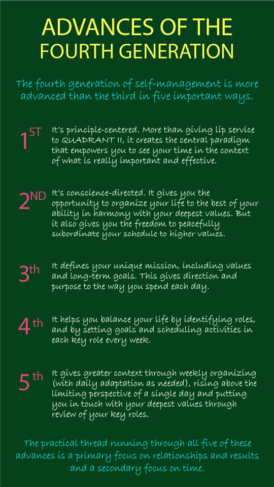
The fourth generation of self-management is more advanced than the third in five important ways.
First, it’s principle-centered. More than giving lip service to Quadrant II, it creates the central paradigm that empowers you to see your time in the context of what is really important and effective.
Second, it’s conscience-directed. It gives you the opportunity to organize your life to the best of your ability in harmony with your deepest values. But it also gives you the freedom to peacefully subordinate your schedule to higher values.
Third, it defines your unique mission, including values and long-term goals. This gives direction and purpose to the way you spend each day.
Fourth, it helps you balance your life by identifying roles, and by setting goals and scheduling activities in each key role every week.
And fifth, it gives greater context through weekly organizing (with daily adaptation as needed), rising above the limiting perspective of a single day and putting you in touch with your deepest values through review of your key roles.
The practical thread running through all five of these advances is a primary focus on relationships and results and a secondary focus on time.
DELEGATION: INCREASING P AND PC
We accomplish all that we do through delegation—either to time or to other people. If we delegate to time, we think efficiency. If we delegate to other people, we think effectiveness.
Many people refuse to delegate to other people because they feel it takes too much time and effort and they could do the job better themselves. But effectively delegating to others is perhaps the single most powerful high-leverage activity there is.
Transferring responsibility to other skilled and trained people enables you to give your energies to other high-leverage activities. Delegation means growth, both for individuals and for organizations. The late J. C. Penney was quoted as saying that the wisest decision he ever made was to “let go” after realizing that he couldn’t do it all by himself any longer. That decision, made long ago, enabled the development and growth of hundreds of stores and thousands of people.
Because delegation involves other people, it is a Public Victory and could well be included in Habit 4. But because we are focusing here on principles of personal management, and the ability to delegate to others is the main difference between the roles of manager and independent producer, I am approaching delegation from the standpoint of your personal managerial skills.
A producer does whatever is necessary to accomplish desired results, to get the golden eggs. A parent who washes the dishes, an architect who draws up blueprints, or a secretary who types correspondence is a producer.
But when a person sets up and works with and through people and systems to produce golden eggs, that person becomes a manager in the interdependent sense. A parent who delegates washing the dishes to a child is a manager. An architect who heads a team of other architects is a manager. A secretary who supervises other secretaries and office personnel is an office manager.
A producer can invest one hour of effort and produce one unit of results, assuming no loss of efficiency.
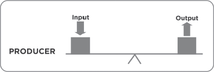
A manager, on the other hand, can invest one hour of effort and produce ten or fifty or a hundred units through effective delegation.
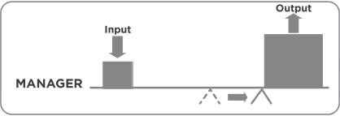
Management is essentially moving the fulcrum over, and the key to effective management is delegation.
GOFER DELEGATION
There are basically two kinds of delegation: “gofer delegation” and “stewardship delegation.” Gofer delegation means “Go for this, go for that, do this, do that, and tell me when it’s done.” Most people who are producers have a gofer delegation paradigm. Remember the machete wielders in the jungle? They are the producers. They roll up their sleeves and get the job done. If they are given a position of supervision or management, they still think like producers. They don’t know how to set up a full delegation so that another person is committed to achieve results. Because they are focused on methods, they become responsible for the results.
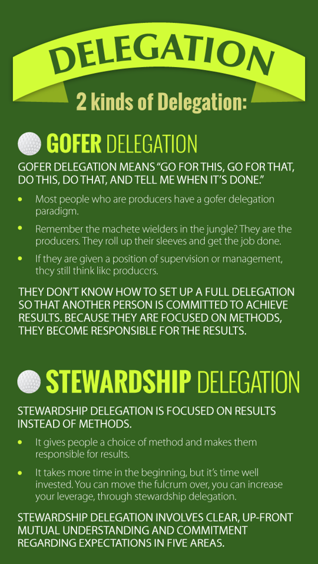
I was involved in a gofer delegation once when our family went water skiing. My son, who is an excellent skier, was in the water being pulled and I was driving the boat. I handed the camera to Sandra and asked her to take some pictures.
At first, I told her to be selective in her picture taking because we didn’t have much film left. Then I realized she was unfamiliar with the camera, so I became a little more specific. I told her to be sure to wait until the sun was ahead of the boat and until our son was jumping the wake or making a turn and touching his elbow.
But the more I thought about our limited footage and her inexperience with the camera, the more concerned I became. I finally said, “Look, Sandra, just push the button when I tell you. Okay?” And I spent the next few minutes yelling, “Take it!—Take it!—Don’t take it!—Don’t take it!” I was afraid that if I didn’t direct her every move every second, it wouldn’t be done right.
That was true gofer delegation, one-on-one supervision of methods. Many people consistently delegate that way. But how much does it really accomplish? And how many people is it possible to supervise or manage when you have to be involved in every move they make?
There’s a much better way, a more effective way to delegate to other people. And it’s based on a paradigm of appreciation of the self-awareness, the imagination, the conscience, and the free will of other people.
STEWARDSHIP DELEGATION
Stewardship delegation is focused on results instead of methods. It gives people a choice of method and makes them responsible for results. It takes more time in the beginning, but it’s time well invested. You can move the fulcrum over, you can increase your leverage, through stewardship delegation.
Stewardship delegation involves clear, up-front mutual understanding and commitment regarding expectations in five areas.
DESIRED RESULTS. Create a clear, mutual understanding of what needs to be accomplished, focusing on what, not how; results, not methods. Spend time. Be patient. Visualize the desired result. Have the person see it, describe it, make out a quality statement of what the results will look like, and by when they will be accomplished.
GUIDELINES. Identify the parameters within which the individual should operate. These should be as few as possible to avoid methods delegation, but should include any formidable restrictions. You wouldn’t want a person to think he had considerable latitude as long as he accomplished the objectives, only to violate some long-standing traditional practice or value. That kills initiative and sends people back to the gofer’s creed: “Just tell me what you want me to do, and I’ll do it.”
If you know the failure paths of the job, identify them. Be honest and open—tell a person where the quicksand is and where the wild animals are. You don’t want to have to reinvent the wheel every day. Let people learn from your mistakes or the mistakes of others. Point out the potential failure paths, what not to do, but don’t tell them what to do. Keep the responsibility for results with them—to do whatever is necessary within the guidelines.
RESOURCES. Identify the human, financial, technical, or organizational resources the person can draw on to accomplish the desired results.
ACCOUNTABILITY. Set up the standards of performance that will be used in evaluating the results and the specific times when reporting and evaluation will take place.
CONSEQUENCES. Specify what will happen, both good and bad, as a result of the evaluation. This could include such things as financial rewards, psychic rewards, different job assignments, and natural consequences tied into the overall mission of an organization.
Some years ago, I had an interesting experience in delegation with one of my sons. We were having a family meeting, and we had our mission statement up on the wall to make sure our plans were in harmony with our values. Everybody was there.
I set up a big blackboard and we wrote down our goals—the key things we wanted to do—and the jobs that flowed out of those goals. Then I asked for volunteers to do the job.
“Who wants to pay the mortgage?” I asked. I noticed I was the only one with my hand up.
“Who wants to pay for the insurance? The food? The cars?” I seemed to have a real monopoly on the opportunities.
“Who wants to feed the new baby?” There was more interest here, but my wife was the only one with the right qualifications for the job.
As we went down the list, job by job, it was soon evident that Mom and Dad had more than sixty-hour work weeks. With that paradigm in mind, some of the other jobs took on a more proper perspective.
My seven-year-old son, Stephen, volunteered to take care of the yard. Before I actually gave him the job, I began a thorough training process. I wanted him to have a clear picture in his mind of what a well cared for yard was like, so I took him next door to our neighbor’s.
“Look, Son,” I said. “See how our neighbor’s yard is green and clean? That’s what we’re after: green and clean. Now come look at our yard. See the mixed colors? That’s not it; that’s not green. Green and clean is what we want. Now how you get it green is up to you. You’re free to do it any way you want, except paint it. But I’ll tell you how I’d do it if it were up to me.”
“How would you do it, Dad?”
“I’d turn on the sprinklers. But you may want to use buckets or a hose. It makes no difference to me. All we care about is that the color is green. Okay?”
“Okay.”
“Now let’s talk about ‘clean,’ Son. Clean means no messes around—no paper, strings, bones, sticks, or anything that messes up the place. I’ll tell you what let’s do. Let’s just clean up half the yard right now and look at the difference.”
So we got out two paper sacks and picked up one side of the yard. “Now look at this side. Look at the other side. See the difference? That’s called clean.”
“Wait!” he called. “I see some paper behind that bush!”
“Oh, good! I didn’t notice that newspaper back there. You have good eyes, Son.
“Now before you decide whether or not you’re going to take the job, let me tell you a few more things. Because when you take the job, I don’t do it anymore. It’s your job. It’s called a stewardship. Stewardship means ‘a job with a trust.’ I trust you to do the job, to get it done. Now who’s going to be your boss?”
“You, Dad?”
“No, not me. You’re the boss. You boss yourself. How do you like Mom and Dad nagging you all the time?”
“I don’t.”
“We don’t like doing it either. It sometimes causes a bad feeling, doesn’t it? So you boss yourself. Now, guess who your helper is.”
“I am,” I said. “You boss me.”
“I do?”
“That’s right. But my time to help is limited. Sometimes I’m away. But when I’m here, you tell me how I can help. I’ll do anything you want me to do.”
“Okay!”
“Now guess who judges you.”
“Who?”
“You judge yourself.”
“I do?”
“That’s right. Twice a week the two of us will walk around the yard, and you can show me how it’s coming. How are you going to judge?”
“Green and clean.”
“Right!”
I trained him with those two words for two weeks before I felt he was ready to take the job. Finally, the big day came.
“Is it a deal, Son?”
“It’s a deal.”
“What’s the job?”
“Green and clean.”
“What’s green?”
He looked at our yard, which was beginning to look better. Then he pointed next door. “That’s the color of his yard.”
“What’s clean?”
“No messes.”
“Who’s the boss?”
“I am.”
“Who’s your helper?”
“You are, when you have time.”
“Who’s the judge?”
“I am. We’ll walk around two times a week and I can show you how it’s coming.”
“And what will we look for?”
“Green and clean.”
At that time I didn’t mention an allowance. But I wouldn’t hesitate to attach an allowance to such a stewardship.
Two weeks and two words. I thought he was ready.
It was Saturday. And he did nothing. Sunday… nothing. Monday… nothing. As I pulled out of the driveway on my way to work on Tuesday, I looked at the yellow, cluttered yard and the hot July sun on its way up. “Surely he’ll do it today,” I thought. I could rationalize Saturday because that was the day we made the agreement. I could rationalize Sunday; Sunday was for other things. But I couldn’t rationalize Monday. And now it was Tuesday. Certainly he’d do it today. It was summertime. What else did he have to do?
All day I could hardly wait to return home to see what happened. As I rounded the corner, I was met with the same picture I left that morning. And there was my son at the park across the street playing.
This was not acceptable. I was upset and disillusioned by his performance after two weeks of training and all those commitments. We had a lot of effort, pride, and money invested in the yard and I could see it going down the drain. Besides, my neighbor’s yard was manicured and beautiful, and the situation was beginning to get embarrassing.
I was ready to go back to gofer delegation. Son, you get over here and pick up this garbage right now or else! I knew I could get the golden egg that way. But what about the goose? What would happen to his internal commitment?
So I faked a smile and yelled across the street, “Hi, Son. How’s it going?”
“Fine!” he returned.
“How’s the yard coming?” I knew the minute I said it I had broken our agreement. That’s not the way we had set up an accounting. That’s not what we had agreed.
So he felt justified in breaking it, too. “Fine, Dad.”
I bit my tongue and waited until after dinner. Then I said, “Son, let’s do as we agreed. Let’s walk around the yard together and you can show me how it’s going in your stewardship.”
As we started out the door, his chin began to quiver. Tears welled up in his eyes and, by the time we got out to the middle of the yard, he was whimpering.
“It’s so hard, Dad!”
What’s so hard? I thought to myself. You haven’t done a single thing! But I knew what was hard—self-management, self-supervision. So I said, “Is there anything I can do to help?”
“Would you, Dad?” he sniffed.
“What was our agreement?”
“You said you’d help me if you had time.”
“I have time.”
So he ran into the house and came back with two sacks. He handed me one. “Will you pick that stuff up?” He pointed to the garbage from Saturday night’s barbecue. “It makes me sick!”
So I did. I did exactly what he asked me to do. And that was when he signed the agreement in his heart. It became his yard, his stewardship.
He only asked for help two or three more times that entire summer. He took care of that yard. He kept it greener and cleaner than it had ever been under my stewardship. He even reprimanded his brothers and sisters if they left so much as a gum wrapper on the lawn.
***
Trust is the highest form of human motivation. It brings out the very best in people. But it takes time and patience, and it doesn’t preclude the necessity to train and develop people so that their competency can rise to the level of that trust.
I am convinced that if stewardship delegation is done correctly, both parties will benefit and ultimately much more work will get done in much less time. I believe that a family that is well organized, whose time has been spent effectively delegating on a one-on-one basis, can organize the work so that everyone can do everything in about an hour a day. But that takes the internal capacity to want to manage, not just to produce. The focus is on effectiveness, not efficiency.
Certainly you can pick up that room better than a child, but the key is that you want to empower the child to do it. It takes time. You have to get involved in the training and development. It takes time, but how valuable that time is downstream! It saves you so much in the long run.
This approach involves an entirely new paradigm of delegation. In effect, it changes the nature of the relationship. The steward becomes his own boss, governed by a conscience that contains the commitment to agreed upon desired results. But it also releases his creative energies toward doing whatever is necessary in harmony with correct principles to achieve those desired results.
The principles involved in stewardship delegation are correct and applicable to any kind of person or situation. With immature people, you specify fewer desired results and more guidelines, identify more resources, conduct more frequent accountability interviews, and apply more immediate consequences. With more mature people, you have more challenging desired results, fewer guidelines, less frequent accountability, and less measurable but more discernable criteria.
Effective delegation is perhaps the best indicator of effective management simply because it is so basic to both personal and organizational growth.
THE QUADRANT II PARADIGM
The key to effective management of self, or of others through delegation, is not in any technique or tool or extrinsic factor. It is intrinsic—in the Quadrant II paradigm that empowers you to see through the lens of importance rather than urgency.
I have included in the Appendix an exercise called “A Quadrant II Day at the Office” which will enable you to see in a business setting how powerfully this paradigm can impact your effectiveness.4
As you work to develop a Quadrant II paradigm, you will increase your ability to organize and execute every week of your life around your deepest priorities, to walk your talk. You will not be dependent on any other person or thing for the effective management of your life.
Interestingly, every one of the Seven Habits is in Quadrant II. Every one deals with fundamentally important things that, if done on a regular basis, would make a tremendous positive difference in our lives.
APPLICATION SUGGESTIONS: